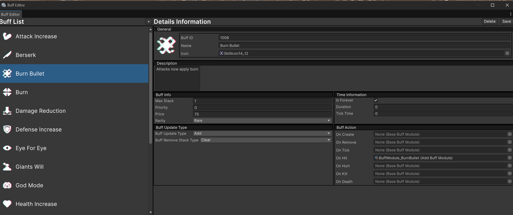
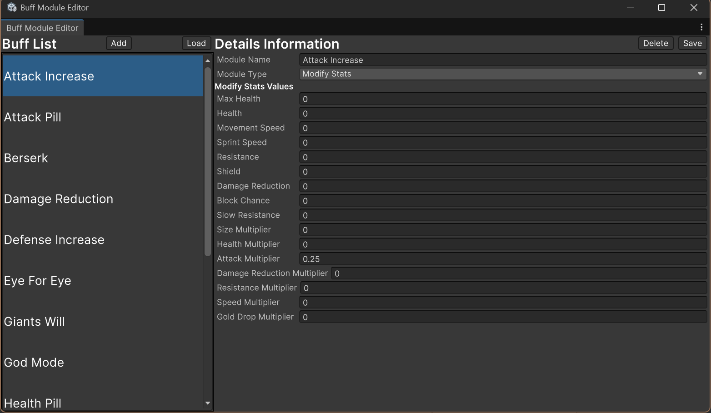

Unity 6 · WebGL · Jan 2025 – May 2025
Role: Gameplay Programmer, Tools Programmer, Project Manager · Team: 5 (2 Programmers, 2 Artists, 1 Designer)
Cell Blockade is a single-player, wave-based top-down action defense prototype developed in Unity 6. The player controls a sentient soap character defending an open wound from increasingly difficult waves of germs. The game focuses on fast combat during waves and build planning between waves through perks and upgrades.
I led a five-person student team as both programmer and project manager. I coordinated an Agile workflow using Trello, defined iteration priorities, reviewed code through GitHub pull requests, and kept the team aligned on milestones while working part-time during the semester.
The game is built around a repeating wave loop with two phases. During the combat phase, enemies spawn continuously and pressure the player through numbers and damage, so the player must move, aim, and manage positioning to survive. During the preparation phase, the player uses a perk shop to modify their build before the next wave.
The prototype implements the full loop end-to-end: wave spawning, enemy scaling, perk selection, and gameplay effects that persist into combat.
Perks are selected through a shop system driven by a RewardManager and a ScriptableObject reward table. Each roll first selects a rarity tier (Common, Uncommon, Rare, Epic, Legendary) using inspector-configurable probabilities, then chooses a perk from that tier. The shop presents three perk options at a time and supports rerolls. Once purchased, a perk is applied immediately as a buff, so it changes real gameplay instead of acting as a simple stat toggle.
I implemented the perk effects using a shared buff runtime system for both players and enemies. Each entity stores active buffs as a List<BuffInstance> with stack count, remaining duration, and priority. Buffs support clear refresh rules (Add / Replace / Keep duration) and stack removal rules (Clear / Reduce). Buff behavior is triggered by gameplay events such as projectile hits and health events (OnHit, OnHurt, OnKill, OnDeath). Effects are built using reusable Buff Modules (ScriptableObjects) so new perks can be created by combining data and modules instead of writing new gameplay scripts.
For enemy AI integration, behavior was separated into components (movement, targeting, attacking, and status/buff response). Buffs can influence enemies through shared interfaces rather than hard dependencies, which made the system easier to extend and maintain as we added new perks and enemy behaviors.
System Design Diagram: I mapped the full buff lifecycle, update rules, and event callbacks in Lucidchart before implementation. This diagram documents how buff data, runtime state, update logic, and effects connect.
Custom Tools: I built two UI Toolkit editor windows (Buff Editor and Buff Module Editor) so designers could create and tune perk content safely without touching code.

Buff Editor: create/edit/delete BuffData assets, assign modules per callback, manual save, safe delete, and auto-rename.

Buff Module Editor: author reusable module assets (e.g., Modify Stats, Damage, Spawn Entity) shared across multiple perks.
This project shows my ability to design and ship connected gameplay systems, build reliable runtime logic, and create editor tools that reduce iteration cost and prevent content mistakes. It also reflects how I lead small teams with clear workflows, reviews, and milestones.